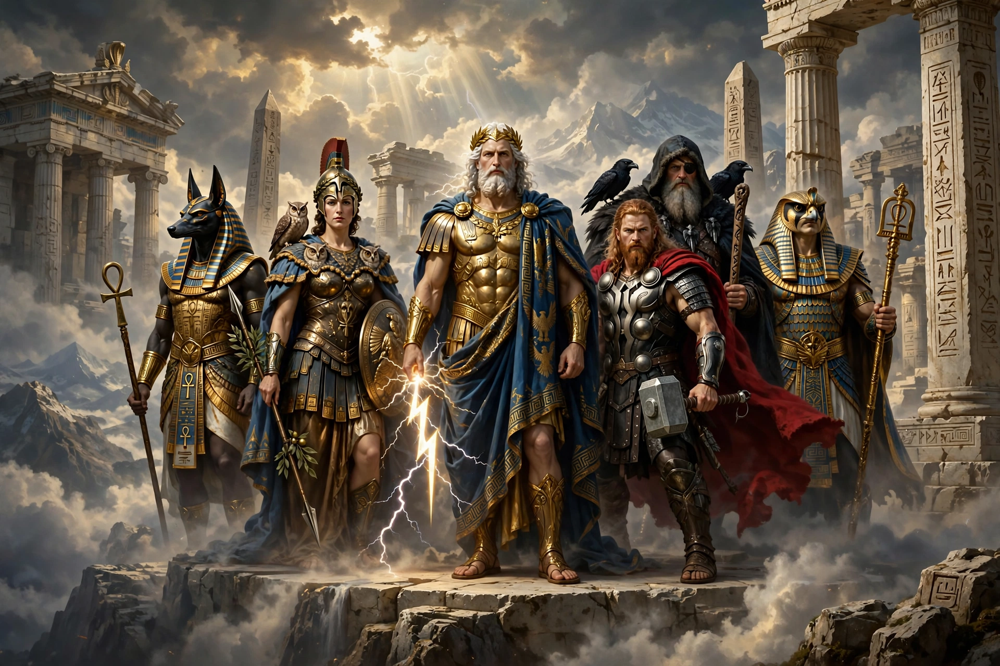

A pantheon is the particular set of all gods of any individual polytheistic religion, mythology, or tradition. The word derives from the Greek pantheion, "temple of all gods", from pan- "all" and theos "god".

Well-known pantheons include the twelve Olympians of Greek mythology headed by Zeus, the Æsir and Vanir of Norse mythology headed by Odin, the Egyptian Ennead, and the many deva of Hindu traditions. Pantheons are typically structured by family relationships, functions (war, love, craft, the sea) and cosmic order.
The term is also applied figuratively to a group of eminent figures in a field, and historically to specific buildings such as the Pantheon in Rome, originally a temple to all gods, and the Panthéon in Paris, a mausoleum for distinguished French citizens. Scholars of comparative mythology such as Max Weber and others have studied how pantheons reflect the societies that created them.
See also: Polytheism, Henotheism